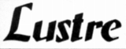
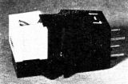
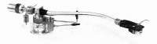
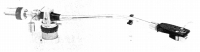
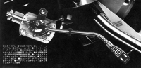
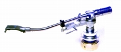

LUSTRE（ラスター）
OEMでのアームの供給を主力としていた興伸電機のブランド。技術力とその生産規模からくるコストパフォーマンスの良さには定評があった。2000年頃GSTシリーズのアームのデットストックが発見され、�且l十七研究所によりかつての数倍の価格で販売された。
�T.カートリッジ

(L-1)�U.アーム
(1)STシリーズ


(左 ST-610 右 ST-455)ST-610 ST-510 ST-510D ST-455 ST-455L ST-370L
(2)GSTシリーズ


(左 GST-1 右 GST-801)